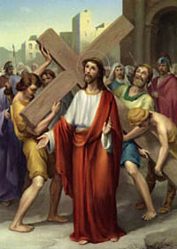

II. állomás: Jézusra rakják a keresztet

A kereszt a gyalázatos halál eszköze. Római állampolgárt nem volt szabad kereszthalálra ítélni; ez túl megalázó volt. Az a pillanat, amikor a Názáreti Jézus felvette a keresztet, hogy hordozza a Kálváriára, fordulópontot jelentett a kereszt történetében. A becstelen halál jele, amely a legalantasabb emberek csoportjának van fenntartva, itt kulccsá változott. Mostantól fogva ennek a kulcsnak a segítségével az ember megnyithatja Isten mélységes misztériumának a kapuját. Krisztus műve folytán, aki elfogadja a keresztet, saját lemeztelenítésének eszközét, az emberek megtudják, hogy Isten a szeretet. A határtalan szeretet: "Annyira szerette a világot, hogy egyszülött Fiát adta érte, hogy mindaz, aki hisz benne, meg ne haljon, hanem örök élete legyen" (Jn 3,16). A kereszt által ez az Istenről szóló igazság nyilatkozik meg. De nem tudna másként kinyilvánulni? Talán igen. Isten azonban a keresztet választotta. Az Atya a keresztet választotta Fia számára, és a Fiú a vállára vette, felvitte a Kálváriára és rajta áldozta fel az életét. "A keresztben van a szenvedés, / a keresztben van az üdvösség, / a keresztben van a szeretet leckéje. / Isten, aki egyszer megértett téged, / semmi mást nem kíván, semmi mást nem keres" (lengyel nagyböjti ének). A kereszt a határok nélküli szeretet jelképe.
Krisztusunk, aki elfogadtad a keresztet az emberek kezéből, hogy Isten üdvözítő szeretetének jelévé változtasd az emberiség számára, add meg nekünk és korunk minden emberének az ebben a végtelen szeretetben való hit kegyelmét, hogy amikor a következő évezred számára átadjuk a kereszt jelét, a megváltás hiteles tanúivá legyünk. Neked Jézus, főpapunk és áldozatunk, tisztelet és dicsőség mindörökkön örökké. Amen.